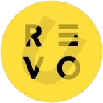

Hi, I’m Ariq 👋 Admin • Finance • Data Analyst
I turn messy field records into clear, accurate numbers.
On an infrastructure project in Medan, I ran the site office: paying up to 23 daily workers every week, controlling project cash, and reporting progress to the main contractor. When manual Excel recaps kept going wrong, I built payroll and petty cash apps that the project admin still uses every day.
Now I want to bring that hands-on discipline, plus data skills certified by RevoU, to an admin, finance, or data team.
Daily Workers Paid Weekly
Attendance, overtime, cash advances and deductions on the BRT project
Foreman Bill Negotiated Down
When funds fell short, so every worker still got paid
Apps Used Every Day on Site
Payroll and petty cash apps, used by the project admin with no complaints
Presenter to Telkom
Presented a 90-day client plan to Telkom Indonesia’s Head of Analytics
I studied management with a finance concentration at Universitas Harapan Medan and wrote my thesis on what drives bank stock returns, using panel data regression in EViews. After graduating, I learned the work hands-on on the BRT utility relocation project, often running the site on my own, including night shifts and a 2 a.m. emergency repair.
Alongside that, I earned RevoU’s Certificate of Excellence in data analytics and founded Nas-AI, an AI data analyst concept for small businesses. What I enjoy most is the same in every role: finding where the numbers do not add up and fixing the process behind them.
What I Can Help With
Petty cash records, weekly payroll, foreman bill checks, weekly fund requests, and cost reports, backed by coursework in cost accounting and financial statement analysis.
Proof: Built the BRT project’s petty cash format from scratch and prepared weekly fund requests to PT Prima Indo Sentosa.
Excel formulas, PivotTables and XLOOKUP for reports; SQL in Google BigQuery; Python and Tableau from RevoU training; panel regression in EViews for my thesis.
Proof: Cleaned 122,749 records and found that the top 3 of 20 clients drove 59.8% of revenue (RevoU x Telkom internship).
Daily task assignment, purchase approvals, progress measurement with the client, and night work supervision, with Google Apps Script tools to cut manual work.
Proof: Coordinated a 2 a.m. emergency repair after a utility pole fell on the project route, finished by morning.
Want to see the work behind these numbers?
Open the projects to try the live apps, view dashboards, notebooks, and slide decks.
Case Studies & Project Catalog
Select a project below to review analytical metrics, slide decks, and strategic business takeaways.
Experience & Education
Work experience and virtual internship, followed by formal education and training.
Work Experience
Project Admin & Site Coordinator
On-Site Execution Team, Partner to PT Prima Indo Sentosa • Medan
BRT Jl. Sisingamangaraja Underground Utility Relocation Infrastructure Project
- Team of Up to 23 Daily Workers: Managed attendance, weekly pay (overtime, cash advances, deductions), meal and fuel allowances, mess, tools, and materials.
- Petty Cash From Scratch: Built the project’s petty cash record format and prepared weekly fund requests to PT Prima Indo Sentosa based on work progress.
- Measured Foreman Work: Measured excavation length together with PT Prima Indo Sentosa and its Project Manager as the basis for the foreman’s Saturday payment, and reported daily progress.
- Negotiated Foreman Bill Down ~48%: When weekly funds fell short, found mismatches in the foreman’s work and negotiated the bill down, so every daily worker still got paid.
- Led Site Operations (Jul–Sep 2026): While the supervisor was away, assigned daily tasks, approved purchases, decided whether work continued, and supervised night work.
- 2 a.m. Emergency Repair: Coordinated an emergency repair after a utility pole fell on the project route due to an accident, until the work was finished that morning.
- Excel Reporting & Own Apps: Built Excel templates with formulas for costs, excavation progress, and materials, plus payroll and petty cash web apps that the project admin still uses every day.
Data Analyst (Virtual Internship)
RevoU x Telkom Indonesia • Remote
- ETL & Data Cleaning: Cleaned, normalized, and unified 122,749 transaction records across 4 communication channels (WhatsApp, SMS, Email, Call) for 20 corporate enterprise accounts using SQL in Google BigQuery.
- Unified BI Dashboarding: Built an interactive Tableau Public dashboard to monitor revenue, monthly trends, peak hours, delivery, engagement, and client risk.
- Pareto Customer Segmentation: Performed enterprise client segmentation in Python, revealing that 3 power accounts (15%) generated 59.8% of total revenue in the dataset (IDR 16.5 million of IDR 27.6 million).
- Selected Presenter: One of the participants selected to present the 90-day client strategy (Protect, Strengthen, Grow, Expand) to the Head of Analytics at Telkom Indonesia via Zoom.
Education & Training
Bachelor of Management (Finance Concentration)
Universitas Harapan Medan • Graduated Aug 2025 • GPA: 3.39 / 4.00
Undergraduate Thesis: Factors Influencing Stock Returns of Banking Companies Listed on the Indonesia Stock Exchange (2019–2023). Tested CAR, ROE, and LDR against stock returns for 10 banks using panel data regression in EViews (Chow, Hausman, and LM tests): CAR and ROE had a significant positive effect, LDR did not. Relevant coursework: Cost Accounting, Management Accounting, and Financial Statement Analysis.

Full-Stack Data Analytics
RevoU • 28 Weeks Certified Program
Completed 4 comprehensive analytics modules (Exploration, Financial Analysis, Dashboarding, & Clustering) with Certificate of Excellence honor.
Official Certifications & Credentials
Each certificate can be verified on RevoU's certificate page.
Full-Stack Data Analytics
A 28-week certified online course and project program offered by RevoU
What I Completed 4 modules · all passed
-
Data Exploration Sprint PASS
Structured trend, segmentation and correlation analysis on a chosen dataset, delivered as a detailed project report.
-
Finance Industry Application PASS
SQL analysis of loan portfolio data to uncover risk patterns and recommend better lending strategy and risk management.
-
Virtual Internship Project 1: Dashboarding PASS
Centralized multi-channel dashboard (WhatsApp, SMS, Email, Voice) unifying performance insights, user trends and monetization opportunities.
-
Virtual Internship Project 2: Clustering PASS
Client usage segmentation with clustering to profile power users, churn risks and upsell candidates.
Full-Stack Data Analytics
A 14-week certified online course offered by RevoU
What I Completed 5 modules · all passed
-
Understanding Business Problems PASS
Structured problem solving and root cause analysis (stakeholder mapping, SMART objectives, issue tree) on a profit decline case.
-
Statistics & Spreadsheet PASS
Data cleaning, outlier detection, descriptive and exploratory analysis, and A/B hypothesis testing on campaign data.
-
SQL PASS
Queries on retail sales data for revenue, customer behavior, repeat purchase rate and product category performance.
-
Python for Data Analyst PASS
pandas, numpy, matplotlib and scikit-learn for data wrangling, exploratory analysis, visualization and customer segmentation.
-
Data Visualization PASS
Interactive Tableau dashboards with joins, LOD calculations, mapping and table calculations to show spending patterns and budget use.
Get in Touch & Start a Conversation
Direct communication channels with Ariq Abdillah for job opportunities, full-time roles, and collaborations.
Open to relocation, on-site, or remote roles.